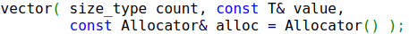
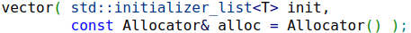

Tableaux dynamiques
Vous apprendrez ici à utiliser des vector de manière un peu plus avancée : construction, accès, insertions, suppressions et recherches n’auront plus de secrets pour vous !
Pour cet exercice, commencez à partir d’un fichier vide.
Construction
Au chapitre précédent, nous vous avions présenté différentes syntaxes permettant d’instancier une classe. Nous vous avions en particulier indiquer qu’il était possible d’utiliser la syntaxe Class c { p1, p2 }; ou bien la syntaxe Class c(p1, p2);.
Eh bien dans le cas des vector, des array et de la plupart des autres conteneurs, ces deux syntaxes n’auront pas le même effet et nous allons voir la différence ici.
Instanciez un vector<int> en lui passant les paramètres 4 et 0 avec {}. Parcourez ensuite ce tableau à l’aide d’une boucle foreach et affichez son contenu.
Remplacez ensuite les {} dans l’instanciation par (). Que constatez-vous ?
//std::vector<int> values { 4, 0 };
std::vector<int> values(4, 0);
for (const auto v: values)
{
std::cout << v << std::endl;
}Avec { 4, 0 }, on obtient le tableau { 4, 0 }. Avec (4, 0), on obtient le tableau { 0, 0, 0, 0 }.
La syntaxe {} permet donc d’initialiser le contenu du conteneur directement, alors que la syntaxe () permet d’initialiser le tableau avec 4 éléments valant 0.
Allez sur la page de documentation des constructeurs de la classe vector.
En lisant les descriptions de chaque surcharge, essayez d’identifier celles que vous avez appelées en utilisant (4, 0) et { 4, 0 }.
En utilisant (4, 0), vous avez appelé la surcharge du constructeur:
count et un paramètre value, qu’elle utilise pour initialiser le tableau avec count éléments value.
En utilisant { 4, 0 }, vous avez appelé la surcharge:
Si dans une classe, vous avez un constructeur qui attend un paramètre de type initializer_list, c’est ce constructeur là qui sera appelé si vous utilisé la syntaxe {}.
Et si la classe ne contient pas ce genre de constructeur, le compilateur utilisera le premier constructeur qu’il trouve ayant une signature pouvant accepter les arguments fournis, que vous utilisiez la syntaxe () ou {}.
Vous allez maintenant utiliser un nouveau constructeur, qui vous permettra de convertir un tableau primitif en un vector.
Il s’agit de la surcharge n° 5 : le constructeur attend deux paramètres first et last, qui correspondent aux itérateurs de début et fin d’un autre conteneur.
Commencez par instancier un tableau primitif avec les valeurs { 0, 1, 2, 3, 4, 5 }.
Les itérateurs d’un tableau primitif sont en fait les pointeurs sur chacune de ses cases :
int array[] = { 0, 4, 3 };
int* iterator_on_2nd_element = &array[1];Construisez maintenant un vector en lui fournissant des itérateurs de votre tableau primitif.
Essayez dans un premier temps d’avoir dans votre vector les valeurs { 2, 3, 4 }, puis essayez ensuite d’obtenir le tableau complet.
Déja, vu que vector a un constructeur par initializer_list, on est obligé d’utiliser la syntaxe () pour utiliser le constructeur qui nous intéresse.
Ensuite, pour aller jusqu’à 4, on se rend compte qu’il faut en fait donner l’itérateur sur la case suivant la dernière que l’on veut inclure.
int array[] = { 0, 1, 2, 3, 4, 5 };
std::vector<int> part(&array[2], &array[5]);
for (const auto v: part)
{
std::cout << v << std::endl;
}
std::vector<int> full(array, array + 6);
for (const auto v: part)
{
std::cout << v << std::endl;
}Pour full, on aurait pu écrire (&array[0], &array[6]), mais c’est plus élégant d’écrire (array, array + 6). Cela évite de penser qu’on essaye d’accéder a l’élément array[6], qui est en dehors de l’array.
Accès aux éléments
Pour accéder à un élément précis d’un tableau, on peut utiliser array[idx], comme sur un tableau primitif :
std::vector<int> values { 1, 2, 3 };
std::cout << "2nd element is " << v[1] << std::endl;
v[2] = 8;
std::cout << "Last element has changed to " << v[2] << std::endl;Utilisez une boucle for (et pas foreach) de manière à inverser l’ordre des éléments du tableau de la question précédente.
Afin d’itérer sur le vector, vous devrez récupérer sa taille. Quelle fonction faut-il utiliser pour ça ?
Sachez également que vous aurez probablement besoin d’utiliser la fonction std::swap.
Dans l’exercice de la page précédente, vous avez appris que size() permet d’obtenir le nombre de d’éléments dans un vector.
Et pour utiliser swap, on n’oublie pas d’inclure le header <utility>.
std::vector<int> full(array, array + 6);
for (size_t left = 0, right = full.size() - 1; left < right; ++left, --right)
{
std::swap(full[left], full[right]);
}Il est possible de définir plusieurs itérateurs dans la zone d’intialisation du for, du moment qu’ils sont de même type.
En C++, rien n’est magique. Si on peut utiliser array[idx] alors que array est de type vector, c’est parce que la classe définit un opérateur [].
Pour définir ce genre d’opérateur, c’est un peu comme pour définir l’opérateur d’assignation, mais avec [] au lieu de =, le type de notre choix pour la valeur de retour et le type par lequel on veut indexer en paramètre.
Par exemple, si on voulait ajouter un opérateur [] dans une classe Annuaire, on pourrait utiliser la signature suivante : PhoneNumber operator[](const LastName& last_name).
Insertions
Vous avez déjà vu que l’on pouvait ajouter des éléments à la fin d’un vector avec les fonctions emplace_back ou push_back.
Qu’en est-il si vous souhaitez insérer des éléments en plein milieu de ce tableau ?
Essayez de trouver dans la documentation les deux fonctions permettant d’ajouter des éléments n’importe où dans un vector. Quelle est la différence entre ces deux fonctions ?
Pour insérer des éléments à une position arbitraire, il est possible d’utiliser insert ou emplace. En utilisant emplace, il est possible de fournir les paramètres de construction de l’élément à insérer (comme emplace_back), alors que pour insert, il faut fournir l’élément à insérer directement (comme push_back).
Vous ne l’avez peut-être pas remarqué, mais ces fonctions attendent un itérateur, et non un indice, pour indiquer où insérer le nouvel élément.
Pour obtenir un itérateur sur le début d’un vector, il faut utiliser la fonction begin(), pour obtenir l’itérateur de fin, il faut utiliser end(), et pour incrémenter l’itérateur, vous pouvez utiliser ++it ou it += step. Enfin, si vous voulez récupérer l’élément pointé, vous pouvez écrire *it :
// Display the content of values.
for (auto it = values.begin(); it != values.end(); ++it)
{
std::cout << *it << std::endl;
}Les itérateurs ont souvent des types compliqués à écrire et à lire, c’est donc un bon prétexte pour utiliser auto.
En utilisant une fonction d’insertion, faites en sorte de dupliquer chacun des éléments de votre tableau. Par exemple, { 1, 2, 3 } devrait devenir { 1, 1, 2, 2, 3, 3 }.
Prenez garde à l’invalidation des itérateurs !
for (auto it = full.begin(); it != full.end(); it += 2)
{
it = full.insert(it, *it);
}En cas de réallocations du tableau pendant l’insertion (parce que la capacité n’est plus suffisante), tous les itérateurs de notre tableau sont invalidés.
C’est pour cela que l’on doit assigner le résultat de insert à it à chaque tour de boucle.
Suppressions
Vous allez maintenant apprendre à supprimer des éléments d’un vector.
La fonction la plus simple à utiliser est celle permettant de retirer le dernier élément du tableau.
Cherchez de quelle fonction il s’agit, et utilisez-la sur votre tableau à l’intérieur d’une boucle while jusqu’à ce que celui-ci soit vide.
Quelle fonction allez-vous utiliser dans la condition du while pour savoir si le tableau est vide ?
while (!full.empty())
{
full.pop_back();
}Ca, c’était la partie façile. Pour supprimer des éléments à une position bien particulière, c’est un tout petit peu plus compliqué.
Pour cela, il faut utiliser la fonction erase. A priori, on pourrait penser que l’on peut écrire v.erase(3) pour supprimer le 3e élément du tableau, sauf que cela ne va pas marcher.
Consultez la documentation pour comprendre ce qui ne va pas et trouvez-y ce qu’il faut écrire à la place.
La fonction erase fonctionne avec des itérateurs et non des indices, comme pour insert ou emplace.
En regardant l’exemple, on voit qu’il est possible de récupérer un itérateur sur la n-ieme case d’un tableau en écrivant v.begin() + n.
Pour supprimer le 3e élément du tableau, on peut donc écrire :
v.erase(v.begin() + 3);Utilisez maintenant erase pour supprimer les éléments allant de l’indice 2 à l’indice 6 inclus d’un tableau contenant initialement { 0, 1, ..., 10 }.
Faites le nécessaire pour que erase ne soit appelé qu’une seule fois par votre programme (=> pas le droit de faire de boucles).
erase dispose d’une surcharge acceptant deux itérateurs, qui permet de supprimer tous les éléments présents entre ces deux itérateurs.
Comme d’habitude, l’élément pointé par l’itérateur de fin est exclu. On doit donc écrire :
v.erase(v.begin() + 2, v.begin() + 7);Supposons maintenant que vous souhaitez retirer un élément du tableau en fonction de sa valeur, et non plus de sa position.
Voici du code permettant de retirer le premier 9 rencontré dans un tableau v :
auto it = v.begin();
for (; it != v.end(); ++it)
{
if (*it == 9)
{
break;
}
}
if (it != v.end())
{
v.erase(it);
}Ca fonctionne, mais bon, ce n’est pas très concis…
Afin de pouvoir supprimer la boucle qui se charge de la recherche, il est possible d’utiliser la fonction std::find. Attention, il s’agit d’une fonction libre, et non pas d’une fonction-membre de vector.
Modifiez le code ci-dessus afin d’utiliser std::find.
Déjà, il faut penser à inclure <algorithm>.
const auto it = std::find(v.begin(), v.end(), 5);
if (it != v.end())
{
v.erase(it);
}Attention à bien vérifier it != v.end() avant d’appeler erase. En effet, find(it1, it2, val) renvoie it2 si la valeur n’est pas trouvée, et il est clairement indiqué dans la documentation de erase qu’il ne faut pas passer v.end() à son paramètre pos.
Opérations globales
Pour terminer, nous allons voir comment réinitialiser complètement un vector.
Si vous souhaitez simplement vider le vector, vous pouvez utiliser la fonction clear.
Et si vous voulez réinitialiser son contenu pour qu’il contienne de nouvelles valeurs, vous pouvez utiliser assign, qui dispose des mêmes surcharges que celles proposées par le constructeur de vector.
Essayez de remplacer le contenu d’un vector existant par un tableau contenant 5 fois la valeur 2, sans utiliser l’opérateur d’assignation (= pas le droit d’utiliser v = ...).
Faites de même, mais en lui attribuant cette fois-ci les valeurs { 0, 2, 32, -4, 3 }.
Enfin, arrangez-vous pour supprimer tout le contenu du tableau.
En regardant les exemples d’utilisation d’assign, on voit que pour appeler la surcharge prenant un initializer_list, il faut écrire v.assign({ ... }).
std::vector<int> v;
v.assign(5, 2);
v.assign({ 0, 2, 32, -4, 3 });
v.clear();